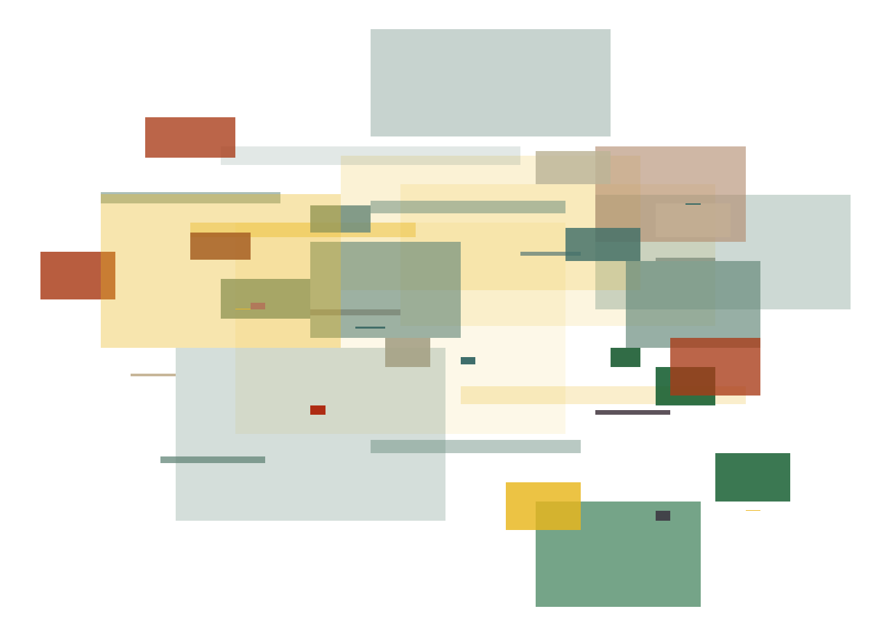

Code
library(tidyverse)
library(ggpubr)
library(imgpalr)
# 1) Importing the dataset and transforming variables ########################
# Reading the dataset
df <- read_csv("./data/colleagues.csv")
# Getting current year
this_year <- as.numeric(format(Sys.Date(), "%Y"))
# Size of the block is equal to the number of years since year met
df$size <- (this_year - df$year_met)
# Creating group combining country and pronoum
df$group <- paste0(df$country, df$pronoum)
# Number of co-laborators
n_colab <- nrow(df)
# 2) Creating colour palette #####################################
# Seed for palette generation and coordinates
seed = 7
set.seed(seed)
# URL of the image of Lygia Clark's Composicao (1953)
img_url <- "https://portal.lygiaclark.org.br/public/upload/screen/2021-09-07/6b1143a6023bc122578da3423f4149cc[2100x2995].jpg"
# Generating one color for each row in the dataset
compo <- image_pal(img_url, n = nrow(df), type = "qual", seed = seed)
# 3) Generating the plot #####################################
# Adding empty columns for coordinates
df <- cbind(df, x1 = NA, x2 = NA, y1 = NA, y2 = NA)
# Loop to generate random coordinates that overlap slightly
for (i in sample(1:n_colab)){
# Defining the starting point randomly
df$x1[i] <- sample(1:n_colab)
df$y1[i] <- sample(1:n_colab)
# If pronoum == s then go right and up otherwise the opposite
direction <- if_else(df$pronoum[i] == "s", 1, -1)
height <- sample(c(0.1, 0.7, 1), 1)
df$x2[i] <- df$x1[i] + direction * df$size[i]
df$y2[i] <- df$y1[i] + direction * df$size[i] * height
}
plot_compo <-
ggplot(df,aes(xmin = x1, xmax = x2, ymin = y1, ymax = y2)) +
geom_rect(aes(fill = group, alpha = 1 - size/max(size))) +
scale_fill_manual(values = compo) +
theme_void() +
theme(legend.position = "none")
ggsave(plot_compo, filename = "./_img/composicao.png")
plot_compo